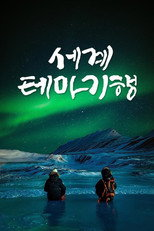
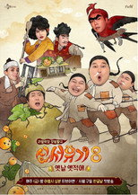
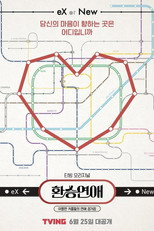
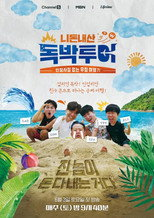
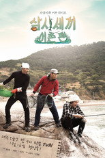

티빙 예능126편 중 인기 60편
순서는 TMDB 인기도입니다 — 넷플릭스 외 서비스는 공식 순위를 공개하지 않습니다. 제공처는 JustWatch 자료(2026-09-22 확인)이며 가입 전 서비스에서 최종 확인하세요. 티빙 요금·할인 →
1 라디오스타시리즈 · 2007 · 예능 · 웨이브, 왓챠에도제공처 ↗2
라디오스타시리즈 · 2007 · 예능 · 웨이브, 왓챠에도제공처 ↗2 아는 형님시리즈 · 2015 · 예능 · 코미디 · 웨이브, 왓챠에도제공처 ↗3
아는 형님시리즈 · 2015 · 예능 · 코미디 · 웨이브, 왓챠에도제공처 ↗3 나 혼자 산다시리즈 · 2013 · 예능 · 웨이브, 왓챠에도제공처 ↗4
나 혼자 산다시리즈 · 2013 · 예능 · 웨이브, 왓챠에도제공처 ↗4 놀라운 토요일시리즈 · 2018 · 코미디 · 예능 · 웨이브에도제공처 ↗5
놀라운 토요일시리즈 · 2018 · 코미디 · 예능 · 웨이브에도제공처 ↗5 1박 2일시리즈 · 2007 · 코미디 · 예능 · 왓챠에도제공처 ↗6
1박 2일시리즈 · 2007 · 코미디 · 예능 · 왓챠에도제공처 ↗6 전지적 참견 시점시리즈 · 2018 · 예능 · 웨이브, 왓챠에도제공처 ↗7
전지적 참견 시점시리즈 · 2018 · 예능 · 웨이브, 왓챠에도제공처 ↗7 쇼! 음악중심시리즈 · 2005 · 예능 · 웨이브에도제공처 ↗8
쇼! 음악중심시리즈 · 2005 · 예능 · 웨이브에도제공처 ↗8 놀면 뭐하니?시리즈 · 2019 · 예능 · 코미디 · 웨이브, 왓챠에도제공처 ↗9
놀면 뭐하니?시리즈 · 2019 · 예능 · 코미디 · 웨이브, 왓챠에도제공처 ↗9 주간 아이돌시리즈 · 2011 · 예능 · 웨이브, 왓챠에도제공처 ↗10
주간 아이돌시리즈 · 2011 · 예능 · 웨이브, 왓챠에도제공처 ↗10 유 퀴즈 온 더 블럭시리즈 · 2018 · 예능 · 코미디 · 웨이브에도제공처 ↗11
유 퀴즈 온 더 블럭시리즈 · 2018 · 예능 · 코미디 · 웨이브에도제공처 ↗11 구해줘! 홈즈시리즈 · 2019 · 예능 · 웨이브, 왓챠에도제공처 ↗12
구해줘! 홈즈시리즈 · 2019 · 예능 · 웨이브, 왓챠에도제공처 ↗12 냉장고를 부탁해시리즈 · 2014 · 예능 · 웨이브, 왓챠에도제공처 ↗13생명을 건 포획 Deadliest Catch시리즈 · 2005 · 예능제공처 ↗14
냉장고를 부탁해시리즈 · 2014 · 예능 · 웨이브, 왓챠에도제공처 ↗13생명을 건 포획 Deadliest Catch시리즈 · 2005 · 예능제공처 ↗14 어서와~ 한국은 처음이지?시리즈 · 2017 · 예능 · 웨이브, 왓챠에도제공처 ↗15한끼줍쇼시리즈 · 2016 · 예능 · 왓챠에도제공처 ↗16
어서와~ 한국은 처음이지?시리즈 · 2017 · 예능 · 웨이브, 왓챠에도제공처 ↗15한끼줍쇼시리즈 · 2016 · 예능 · 왓챠에도제공처 ↗16 프리한19시리즈 · 2016 · 예능 · 웨이브에도제공처 ↗17
프리한19시리즈 · 2016 · 예능 · 웨이브에도제공처 ↗17 맛있는 녀석들시리즈 · 2015 · 예능 · 웨이브, 왓챠에도제공처 ↗18
맛있는 녀석들시리즈 · 2015 · 예능 · 웨이브, 왓챠에도제공처 ↗18 나는 SOLO I am Solo시리즈 · 2021 · 예능 · 넷플릭스, 웨이브, 왓챠에도넷플릭스 한국 최고 1위19방구석1열시리즈 · 2018 · 예능 · 왓챠에도제공처 ↗20벌거벗은 세계사시리즈 · 2020 · 예능제공처 ↗21
나는 SOLO I am Solo시리즈 · 2021 · 예능 · 넷플릭스, 웨이브, 왓챠에도넷플릭스 한국 최고 1위19방구석1열시리즈 · 2018 · 예능 · 왓챠에도제공처 ↗20벌거벗은 세계사시리즈 · 2020 · 예능제공처 ↗21 나는 SOLO, 그 후 사랑은 계속된다 I'm SOLO, Love goes on시리즈 · 2022 · 예능 · 넷플릭스, 웨이브, 왓챠에도넷플릭스 한국 최고 3위22한문철의 블랙박스 리뷰시리즈 · 2022 · 예능 · 왓챠에도제공처 ↗23
나는 SOLO, 그 후 사랑은 계속된다 I'm SOLO, Love goes on시리즈 · 2022 · 예능 · 넷플릭스, 웨이브, 왓챠에도넷플릭스 한국 최고 3위22한문철의 블랙박스 리뷰시리즈 · 2022 · 예능 · 왓챠에도제공처 ↗23 여우 같은 게 뭐가 나빠?시리즈 · 2020 · 예능 · 웨이브, 왓챠에도제공처 ↗24엠카운트다운시리즈 · 2004 · 예능제공처 ↗25
여우 같은 게 뭐가 나빠?시리즈 · 2020 · 예능 · 웨이브, 왓챠에도제공처 ↗24엠카운트다운시리즈 · 2004 · 예능제공처 ↗25 뭉쳐야 찬다 The Gentlemen's League시리즈 · 2019 · 예능 · 웨이브, 왓챠에도넷플릭스 한국 최고 8위26김제동의 톡투유시리즈 · 2015 · 예능제공처 ↗27
뭉쳐야 찬다 The Gentlemen's League시리즈 · 2019 · 예능 · 웨이브, 왓챠에도넷플릭스 한국 최고 8위26김제동의 톡투유시리즈 · 2015 · 예능제공처 ↗27 투유 프로젝트 – 슈가맨시리즈 · 2015 · 예능 · 웨이브, 왓챠에도제공처 ↗28비정상회담시리즈 · 2014 · 예능 · 왓챠에도제공처 ↗29
투유 프로젝트 – 슈가맨시리즈 · 2015 · 예능 · 웨이브, 왓챠에도제공처 ↗28비정상회담시리즈 · 2014 · 예능 · 왓챠에도제공처 ↗29 요즘 육아 금쪽같은 내새끼 My Golden Kids시리즈 · 2020 · 예능 · 웨이브에도넷플릭스 한국 최고 8위30그랜드 투어 The Grand Tour시리즈 · 2016 · 예능 · 코미디 · 프라임비디오, 왓챠에도제공처 ↗31너의 목소리가 보여시리즈 · 2015 · 예능제공처 ↗32
요즘 육아 금쪽같은 내새끼 My Golden Kids시리즈 · 2020 · 예능 · 웨이브에도넷플릭스 한국 최고 8위30그랜드 투어 The Grand Tour시리즈 · 2016 · 예능 · 코미디 · 프라임비디오, 왓챠에도제공처 ↗31너의 목소리가 보여시리즈 · 2015 · 예능제공처 ↗32 무엇이든 물어보살시리즈 · 2019 · 가족 · 예능 · 웨이브, 왓챠에도제공처 ↗33
무엇이든 물어보살시리즈 · 2019 · 가족 · 예능 · 웨이브, 왓챠에도제공처 ↗33 연애의 참견시리즈 · 2018 · 예능 · 웨이브, 왓챠에도제공처 ↗34마녀사냥시리즈 · 2013 · 예능 · 왓챠에도제공처 ↗35
연애의 참견시리즈 · 2018 · 예능 · 웨이브, 왓챠에도제공처 ↗34마녀사냥시리즈 · 2013 · 예능 · 왓챠에도제공처 ↗35 오은영 리포트: 결혼지옥시리즈 · 2022 · 예능 · 웨이브에도제공처 ↗36아이돌룸시리즈 · 2018 · 예능 · 왓챠에도제공처 ↗37
오은영 리포트: 결혼지옥시리즈 · 2022 · 예능 · 웨이브에도제공처 ↗36아이돌룸시리즈 · 2018 · 예능 · 왓챠에도제공처 ↗37 심야괴담회시리즈 · 2021 · 예능 · 웨이브, 왓챠에도제공처 ↗38
심야괴담회시리즈 · 2021 · 예능 · 웨이브, 왓챠에도제공처 ↗38 나만 믿고 따라와, 도시어부시리즈 · 2017 · 예능 · 웨이브에도제공처 ↗39나나투어 with 세븐틴시리즈 · 2024 · 예능제공처 ↗40
나만 믿고 따라와, 도시어부시리즈 · 2017 · 예능 · 웨이브에도제공처 ↗39나나투어 with 세븐틴시리즈 · 2024 · 예능제공처 ↗40 이십세기 힛-트쏭시리즈 · 2020 · 예능 · 웨이브, 왓챠에도제공처 ↗41
이십세기 힛-트쏭시리즈 · 2020 · 예능 · 웨이브, 왓챠에도제공처 ↗41 용감한 형사들 Brave Detectives시리즈 · 2022 · 범죄 · 예능 · 넷플릭스, 웨이브, 왓챠에도넷플릭스 한국 최고 4위43
용감한 형사들 Brave Detectives시리즈 · 2022 · 범죄 · 예능 · 넷플릭스, 웨이브, 왓챠에도넷플릭스 한국 최고 4위43 바퀴 달린 집시리즈 · 2020 · 예능 · 웨이브에도제공처 ↗44
바퀴 달린 집시리즈 · 2020 · 예능 · 웨이브에도제공처 ↗44
라디오스타시리즈 · 2007 · 예능 · 웨이브, 왓챠에도제공처 ↗2아는 형님시리즈 · 2015 · 예능 · 코미디 · 웨이브, 왓챠에도제공처 ↗3나 혼자 산다시리즈 · 2013 · 예능 · 웨이브, 왓챠에도제공처 ↗4놀라운 토요일시리즈 · 2018 · 코미디 · 예능 · 웨이브에도제공처 ↗51박 2일시리즈 · 2007 · 코미디 · 예능 · 왓챠에도제공처 ↗6전지적 참견 시점시리즈 · 2018 · 예능 · 웨이브, 왓챠에도제공처 ↗7쇼! 음악중심시리즈 · 2005 · 예능 · 웨이브에도제공처 ↗8놀면 뭐하니?시리즈 · 2019 · 예능 · 코미디 · 웨이브, 왓챠에도제공처 ↗9주간 아이돌시리즈 · 2011 · 예능 · 웨이브, 왓챠에도제공처 ↗10유 퀴즈 온 더 블럭시리즈 · 2018 · 예능 · 코미디 · 웨이브에도제공처 ↗11구해줘! 홈즈시리즈 · 2019 · 예능 · 웨이브, 왓챠에도제공처 ↗12냉장고를 부탁해시리즈 · 2014 · 예능 · 웨이브, 왓챠에도제공처 ↗13생명을 건 포획 Deadliest Catch시리즈 · 2005 · 예능제공처 ↗14어서와~ 한국은 처음이지?시리즈 · 2017 · 예능 · 웨이브, 왓챠에도제공처 ↗15한끼줍쇼시리즈 · 2016 · 예능 · 왓챠에도제공처 ↗16프리한19시리즈 · 2016 · 예능 · 웨이브에도제공처 ↗17맛있는 녀석들시리즈 · 2015 · 예능 · 웨이브, 왓챠에도제공처 ↗18나는 SOLO I am Solo시리즈 · 2021 · 예능 · 넷플릭스, 웨이브, 왓챠에도넷플릭스 한국 최고 1위19방구석1열시리즈 · 2018 · 예능 · 왓챠에도제공처 ↗20벌거벗은 세계사시리즈 · 2020 · 예능제공처 ↗21나는 SOLO, 그 후 사랑은 계속된다 I'm SOLO, Love goes on시리즈 · 2022 · 예능 · 넷플릭스, 웨이브, 왓챠에도넷플릭스 한국 최고 3위22한문철의 블랙박스 리뷰시리즈 · 2022 · 예능 · 왓챠에도제공처 ↗23여우 같은 게 뭐가 나빠?시리즈 · 2020 · 예능 · 웨이브, 왓챠에도제공처 ↗24엠카운트다운시리즈 · 2004 · 예능제공처 ↗25뭉쳐야 찬다 The Gentlemen's League시리즈 · 2019 · 예능 · 웨이브, 왓챠에도넷플릭스 한국 최고 8위26김제동의 톡투유시리즈 · 2015 · 예능제공처 ↗27투유 프로젝트 – 슈가맨시리즈 · 2015 · 예능 · 웨이브, 왓챠에도제공처 ↗28비정상회담시리즈 · 2014 · 예능 · 왓챠에도제공처 ↗29요즘 육아 금쪽같은 내새끼 My Golden Kids시리즈 · 2020 · 예능 · 웨이브에도넷플릭스 한국 최고 8위30그랜드 투어 The Grand Tour시리즈 · 2016 · 예능 · 코미디 · 프라임비디오, 왓챠에도제공처 ↗31너의 목소리가 보여시리즈 · 2015 · 예능제공처 ↗32무엇이든 물어보살시리즈 · 2019 · 가족 · 예능 · 웨이브, 왓챠에도제공처 ↗33연애의 참견시리즈 · 2018 · 예능 · 웨이브, 왓챠에도제공처 ↗34마녀사냥시리즈 · 2013 · 예능 · 왓챠에도제공처 ↗35오은영 리포트: 결혼지옥시리즈 · 2022 · 예능 · 웨이브에도제공처 ↗36아이돌룸시리즈 · 2018 · 예능 · 왓챠에도제공처 ↗37심야괴담회시리즈 · 2021 · 예능 · 웨이브, 왓챠에도제공처 ↗38나만 믿고 따라와, 도시어부시리즈 · 2017 · 예능 · 웨이브에도제공처 ↗39나나투어 with 세븐틴시리즈 · 2024 · 예능제공처 ↗40이십세기 힛-트쏭시리즈 · 2020 · 예능 · 웨이브, 왓챠에도제공처 ↗41
세계테마기행시리즈 · 2008 · 예능 · 다큐멘터리 · 왓챠에도제공처 ↗42용감한 형사들 Brave Detectives시리즈 · 2022 · 범죄 · 예능 · 넷플릭스, 웨이브, 왓챠에도넷플릭스 한국 최고 4위43바퀴 달린 집시리즈 · 2020 · 예능 · 웨이브에도제공처 ↗44
신서유기시리즈 · 2015 · 드라마 · 코미디 · 왓챠에도제공처 ↗45히든아이시리즈 · 2024 · 예능 · 범죄 · 웨이브, 왓챠에도제공처 ↗46
환승연애시리즈 · 2021 · 예능제공처 ↗47
니돈내산 독박투어시리즈 · 2023 · 예능 · 넷플릭스, 웨이브, 왓챠에도제공처 ↗48하트시그널시리즈 · 2017 · 예능 · 웨이브, 왓챠에도제공처 ↗49나는 자연인이다시리즈 · 2012 · 예능 · 왓챠에도제공처 ↗50
삼시세끼 어촌편시리즈 · 2015 · 예능제공처 ↗51대탈출시리즈 · 2018 · 코미디 · 예능 · 웨이브에도제공처 ↗52크라임씬시리즈 · 2014 · 범죄 · 예능 · 넷플릭스, 왓챠에도제공처 ↗53식스센스시리즈 · 2020 · 예능 · 웨이브에도제공처 ↗54어쩌다 어른시리즈 · 2015 · 다큐멘터리 · 예능제공처 ↗55뿅뿅 지구오락실시리즈 · 2022 · 액션 · 모험제공처 ↗56어쩌다 사장시리즈 · 2021 · 예능 · 디즈니+, 웨이브에도제공처 ↗57탐정들의 영업비밀시리즈 · 2024 · 다큐멘터리 · 범죄 · 웨이브에도제공처 ↗58밥블레스유시리즈 · 2018 · 예능제공처 ↗59히든싱어시리즈 · 2012 · 예능 · 디즈니+, 웨이브, 왓챠에도제공처 ↗60서진이네시리즈 · 2023 · 예능 · 프라임비디오에도제공처 ↗